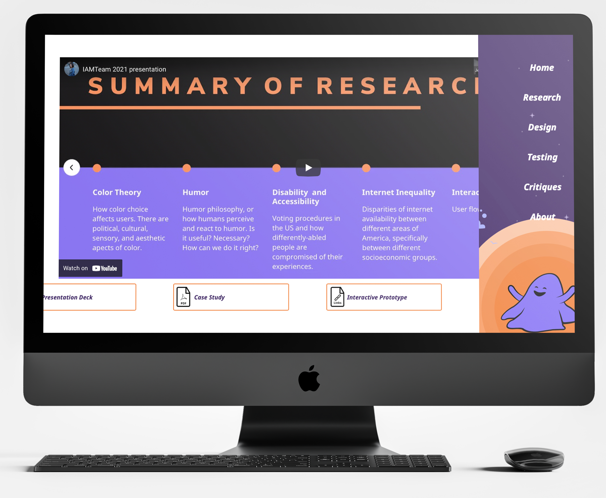

Young people have voted at lower rates than other age groups
In collaboration with Kin + Carta and a group of Interactive Arts and Media students at Columbia College Chicago.
Given the highly political and sensitive nature of voting, we came into the project with the knowledge that our solution would need to be especially well-researched and tested. Kin and Carta initially came to us with useful user data as to the general type of solution that people wanted in accordance to a product related to voting. We began by unpacking this exploratory research and using this to define our full problem. With all of this information, we started looking into related problems people associate with voting. This constituted our initial phase of exploratory research.
My Role
My portion of this project consisted of researching and leading research groups into topics that surround the voting process, things such as discrimination, gerrymandering, and confusion towards voting in first time or young voters. In addition to leading the content writing team and writing the lesson plans that the app would ultimately build upon, I also conducted user interviews and the creation of user surveys while synthesizing findings along the way.
Case Study and Database
Visit the site here
This website contains all final deliverables including a recording of our final presentation, final presentation deck, long form research paper, clickable prototype, and a database of all process materials and files.